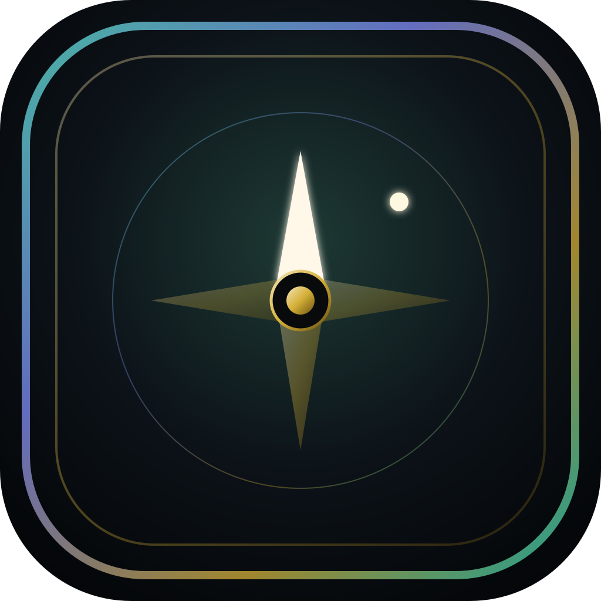
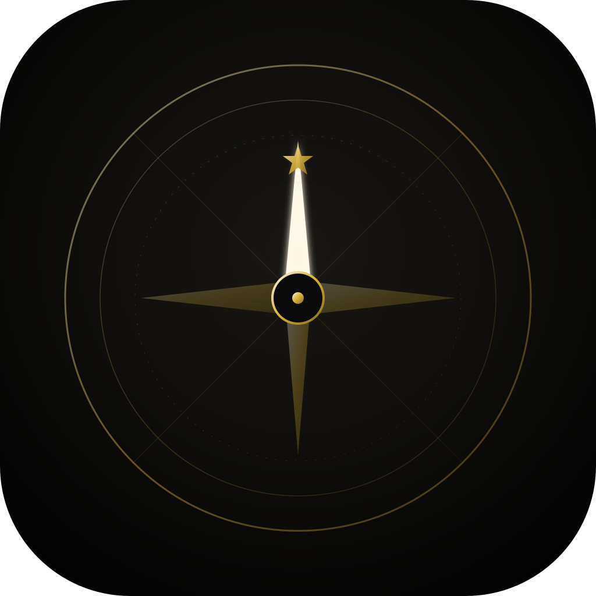

P1 Teal kanon
Närmast din bild · teal + guld + nitar
P2 Obsidian ember
Varm glöd · brun/svart · eldnål
P3 Aurora rim
Teal + lila kant · v4-DNA
P4 Sacred minimal
Ren · tunna ringar · stjärna nord
Samma kompass-idé, olika stämning. Öppna filen i webbläsare. När du valt: säg t.ex. «P3» så sätter vi den på telefonen.


Android: npm run android:icons:phone -- docs/design/themes/phone-icon-variants/P?.svg (efter export till PNG 1024)